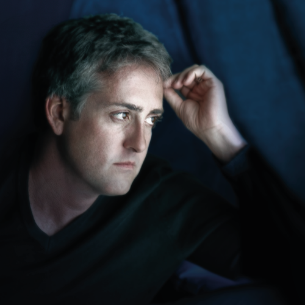

PETER CAMPBELL
Holzenfirma Executive
Peter has performed for over thirty years in cabaret, theater, film and television across much of North America. More recently he has performed throughout Toronto and has released three recordings since relocating to Canada from his native New York City in 2012. His 2017 release, "Loving You: Celebrating Shirley Horn," received critical acclaim both in Canada and internationally. The album garnered inclusion on several lists of the top jazz recordings of 2017 and was nominated for a 2018 Independent Music Award. His 2020 release, "Old Flames Never Die," was released to stellar reviews and received an "Editor's Feature" in the June 2020 issue of JazzTimes magazine. You can find out more at www.petercampbellmusic.com